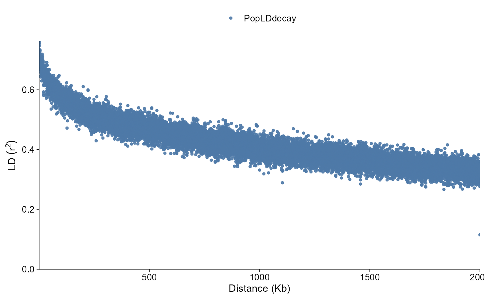
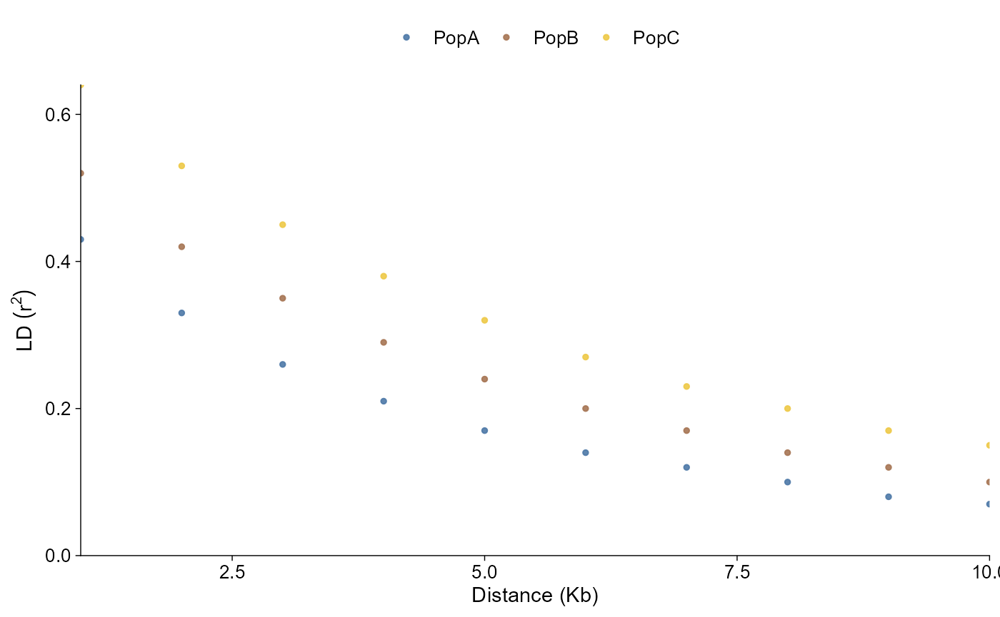
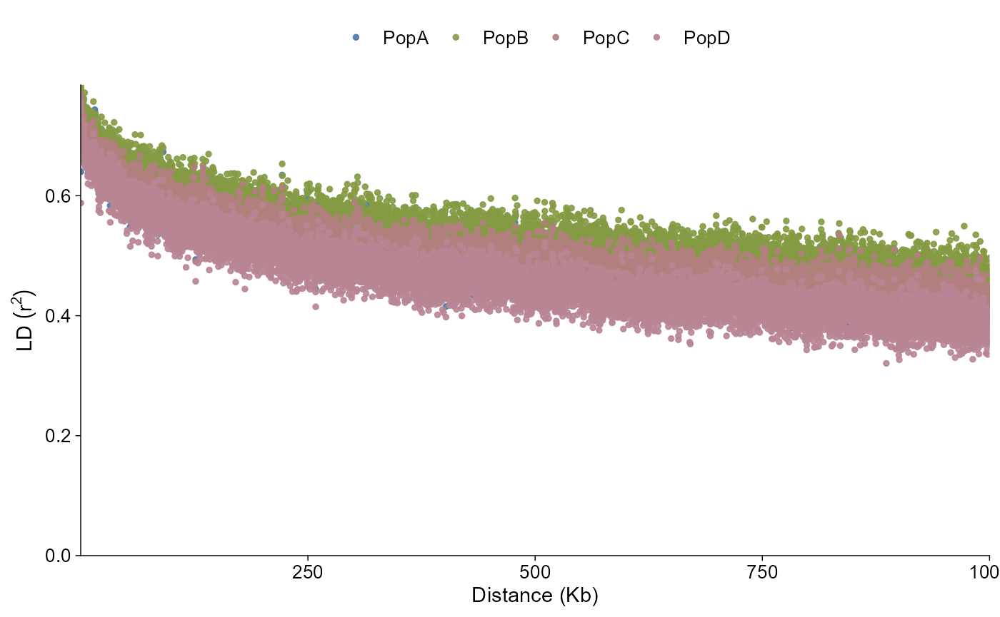

ggpop imports LD decay summaries into a typed
ggpop_ld_decay object. The module supports PopLDdecay
*.stat.gz summaries and PLINK pairwise LD tables summarized
into distance bins. PopLDdecay summaries can be left as-is or collapsed
again with method = "MeanBin", MedianBin, or
PercentileBin.
API summary
| Task | API | Notes |
|---|---|---|
| Import PopLDdecay summaries | import_ld_decay(dir, type = "poplddecay") |
Reads *.stat.gz and *.bin.gz files
directly |
| Import PLINK LD pairs | import_ld_decay(file, type = "plink") |
Summarizes pairwise LD into distance bins |
| Direct plot | plot_ld_decay(data, style = "point") |
Returns a ggplot object |
| Layered plot | ggpop(data) + geom_ld_decay(...) |
Tidy ggplot extension path |
| Plot style |
style = "point" / "line" /
"fit"
|
Raw summary points, connected summary lines, or fitted curves |
| Measure view |
measure = "r2" / "D" /
"both"
|
D' needs PopLDdecay D output |
| Population labels | pop_group |
Uses the package-wide two-column sample pop file |
Import PopLDdecay results
The bundled example contains one PopLDdecay *.stat.gz
result per population. importer standardizes Dist to
dist, Mean_r^2 to r2, and
NumberPairs to n_pairs.
ld_dir <- ggpop_extdata("ld_decay", "poplddcay")
ld_decay <- import_ld_decay(ld_dir, type = "poplddecay")
class(ld_decay)
#> [1] "ggpop_ld_decay" "data.frame"
head(ld_decay)
#> dist dist_kb r2 d_prime sum_r2
#> PopA\rPopA.stat.gz\r10\r0 10 0.01 0.7666593 NA 1687.417
#> PopA\rPopA.stat.gz\r10\r1 20 0.02 0.7609297 NA 2447.911
#> PopA\rPopA.stat.gz\r10\r2 30 0.03 0.7585424 NA 2059.443
#> PopA\rPopA.stat.gz\r10\r3 40 0.04 0.7613730 NA 1764.863
#> PopA\rPopA.stat.gz\r10\r4 50 0.05 0.7546858 NA 1353.152
#> PopA\rPopA.stat.gz\r10\r5 60 0.06 0.7595983 NA 1078.630
#> sum_d_prime n_pairs pop sample_id
#> PopA\rPopA.stat.gz\r10\r0 NA 2201 PopA PopA
#> PopA\rPopA.stat.gz\r10\r1 NA 3217 PopA PopA
#> PopA\rPopA.stat.gz\r10\r2 NA 2715 PopA PopA
#> PopA\rPopA.stat.gz\r10\r3 NA 2318 PopA PopA
#> PopA\rPopA.stat.gz\r10\r4 NA 1793 PopA PopA
#> PopA\rPopA.stat.gz\r10\r5 NA 1420 PopA PopA
#> file ld_method source .group
#> PopA\rPopA.stat.gz\r10\r0 PopA.stat.gz MeanBin poplddecay PopA
#> PopA\rPopA.stat.gz\r10\r1 PopA.stat.gz MeanBin poplddecay PopA
#> PopA\rPopA.stat.gz\r10\r2 PopA.stat.gz MeanBin poplddecay PopA
#> PopA\rPopA.stat.gz\r10\r3 PopA.stat.gz MeanBin poplddecay PopA
#> PopA\rPopA.stat.gz\r10\r4 PopA.stat.gz MeanBin poplddecay PopA
#> PopA\rPopA.stat.gz\r10\r5 PopA.stat.gz MeanBin poplddecay PopAPopulation grouping follows the same pop_group.txt
convention used by PCA and admixture. The LD decay file label is stored
as sample_id; if a matching sample appears in
pop_group, the corresponding pop value is used
for colouring. The point and line styles keep
the imported summary rows; fit draws population-level
fitted curves after mapping sample labels to groups.
The importer also accepts a single file path, and the
method argument can be used to re-bin PopLDdecay summaries
with the same mean-bin, median, or percentile behavior used by the
legacy plotting scripts.
ld_group_dir <- ggpop_extdata("ld_decay", "poplddcay")
ld_grouped <- import_ld_decay(
ld_group_dir,
type = "poplddecay"
)
unique(ld_grouped$pop)
#> [1] "PopA" "PopB" "PopC" "PopD"PLINK pairwise LD tables can be imported the same way. A single
.ld file draws one population, while importing the
directory keeps one curve per population file.
plink_ld <- import_ld_decay(
ggpop_extdata("ld_decay", "plink_ld"),
type = "plink",
bin_size = 200
)
unique(plink_ld$pop)
#> [1] "PopA" "PopB" "PopC"Point style
The point style follows the common LD summary plot: pairwise distance in Kb on the x-axis and mean LD on the y-axis, with population labels mapped to colour.
plot_ld_decay(
ld_grouped,
style = "point"
)
Line style
The line style uses the same data and population colour mapping, but draws a continuous decay curve.
plot_ld_decay(
ld_grouped,
style = "line"
)
Fitted line style
Use style = "fit" when you want a smoothed
population-level decay curve.
plot_ld_decay(
ld_grouped,
style = "fit"
)
Layered path
Use ggpop() plus geom_ld_decay() when
composing with other ggplot layers.
ld_grouped |>
ggpop() +
geom_ld_decay(style = "point")